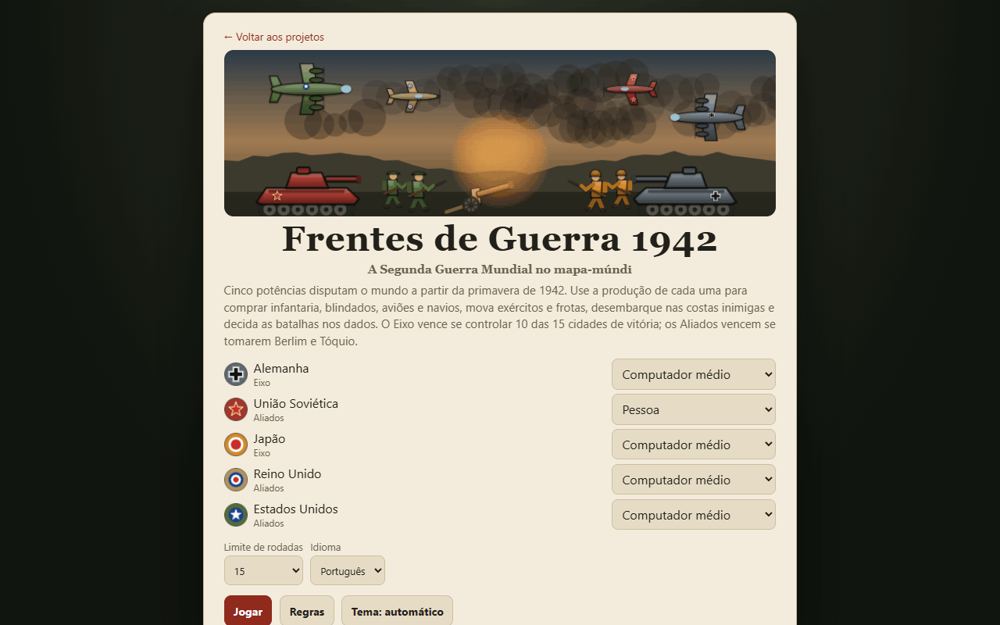
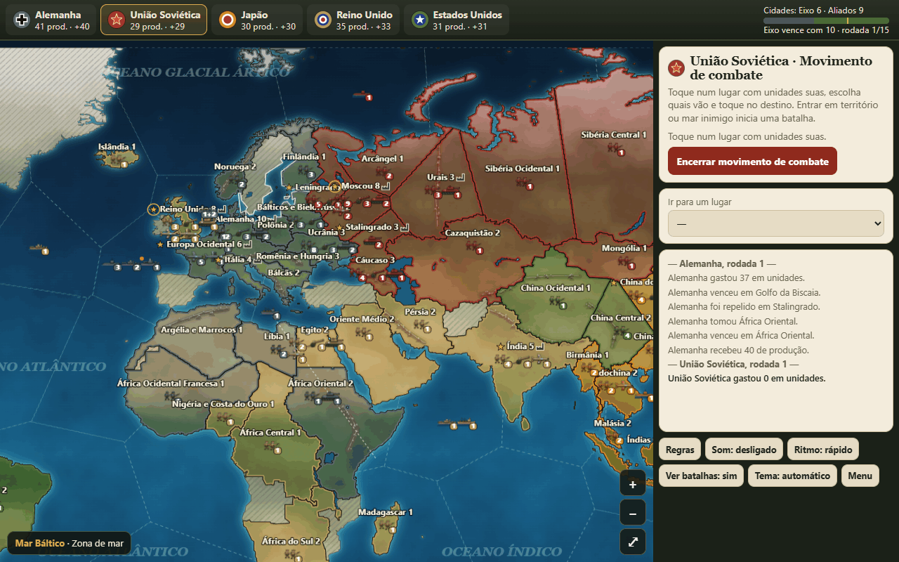
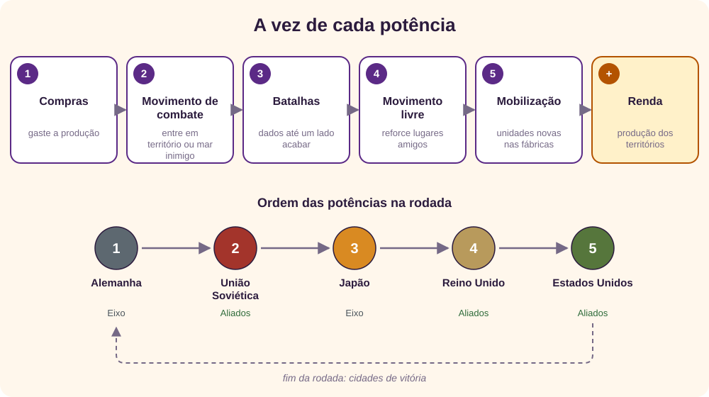
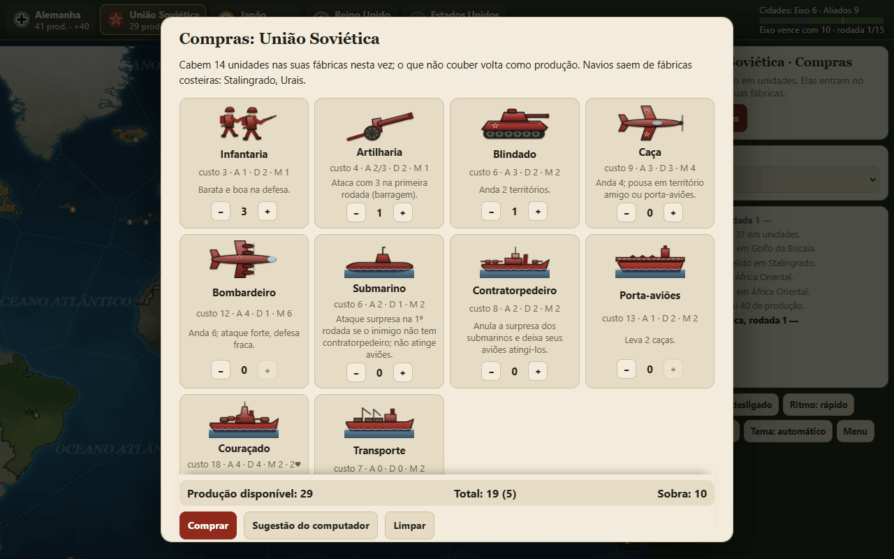
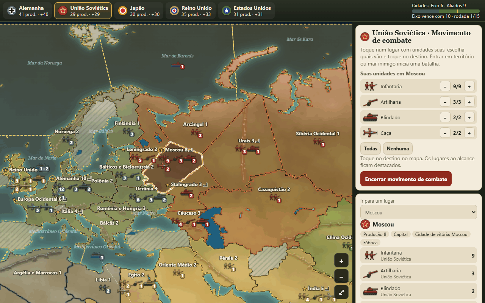
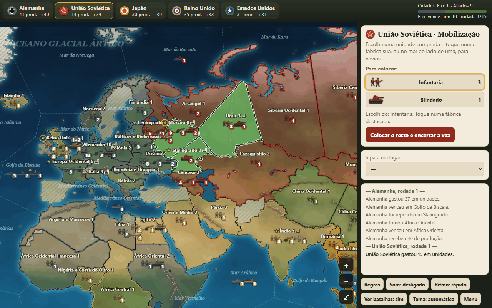
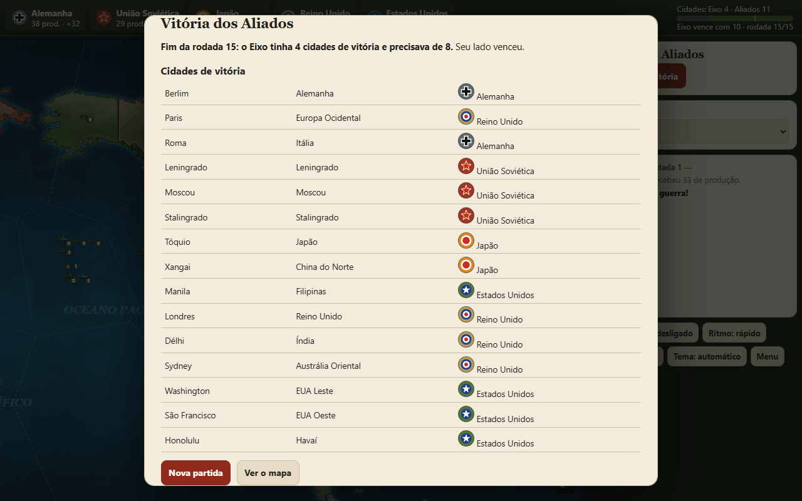

O jogo em um minuto
Frentes de Guerra 1942 é um jogo de estratégia da Segunda Guerra Mundial no mapa-múndi, do gênero de jogos de tabuleiro como Axis & Allies. [8] As regras, os valores e o mapa são próprios, e o jogo não tem ligação com nenhum jogo de tabuleiro.
Cinco potências jogam em turnos: Alemanha e Japão pelo Eixo; União Soviética, Reino Unido e Estados Unidos pelos Aliados. Na sua vez, cada uma compra unidades com a produção dos territórios que controla, move exércitos, frotas e aviões, resolve as batalhas nos dados e coloca as unidades novas nas fábricas. O Eixo vence se controlar 10 das 15 cidades de vitória; os Aliados vencem se tomarem Berlim e Tóquio.
↑ Voltar ao topoO cenário de 1942
O jogo começa numa situação inspirada na primavera de 1942. A Alemanha tinha invadido a União Soviética em junho de 1941 [1] e o Japão atacara Pearl Harbor em dezembro de 1941, trazendo os Estados Unidos para a guerra. [2] O ano de 1942 foi o das grandes viradas: a batalha naval de Midway, em junho, [3] a batalha de Stalingrado, de agosto de 1942 a fevereiro de 1943, [4] a segunda batalha de El Alamein, no Egito, em outubro e novembro, [5] e os desembarques aliados no norte da África, em novembro. [6] [7]
No jogo, essas frentes aparecem no mapa: a Alemanha perto de Moscou e de Stalingrado, o Japão espalhado pela Ásia e pelo Pacífico, o Reino Unido no Egito e na Índia, os Estados Unidos com a frota no Havaí. Mas é um jogo, não uma reconstituição: territórios, produções e exércitos são simplificados e não são números históricos. O mapa é desenhado com contornos atuais do Natural Earth. [9]
No começo, o Eixo produz 68 por vez (Alemanha 38, Japão 30) e os Aliados, 95 (União Soviética 29, Reino Unido 35, Estados Unidos 31). O Eixo tem exércitos maiores perto das frentes; os Aliados têm mais produção, mas precisam levá-la até onde se luta.
↑ Voltar ao topoComeçando uma partida

Para cada potência, escolha se joga uma pessoa ou o computador no nível fácil, médio ou difícil. Várias pessoas podem jogar no mesmo aparelho, cada uma na sua vez; com todas no computador, você assiste à guerra.
O limite de rodadas (10, 15, 20 ou sem limite) encerra a partida: no fim da última rodada, o Eixo vence se tiver 8 cidades de vitória ou mais; senão, vencem os Aliados. A partida é salva no navegador, e Continuar partida volta de onde você parou.
↑ Voltar ao topoA tela e o mapa

- Barra do alto: cada potência com a produção guardada e a renda por vez, e o placar de cidades de vitória, com a marca de 10 que o Eixo precisa.
- Mapa: a cor mostra o dono. O número ao lado do nome é a produção do território; a estrela marca cidade de vitória, o círculo em volta dela, uma capital, e o ícone de chaminé, uma fábrica. As áreas hachuradas são neutras e não podem ser atravessadas.
- Unidades: cada pilha mostra um tipo e um dono, com a quantidade. Num transporte, “+2” indica a carga.
- Painel da fase: o que fazer agora e os botões para seguir.
- Ir para um lugar: escolhe um território ou mar pelo nome, também pelo teclado; equivale a tocar nele.
Arraste para mover o mapa, que dá a volta pelo Pacífico; use a roda do mouse, a pinça ou os botões + e − para aproximar. No teclado, com o mapa em foco, as setas movem e + e − aproximam.
↑ Voltar ao topoA vez de cada potência

A rodada segue a ordem Alemanha, União Soviética, Japão, Reino Unido e Estados Unidos. Cada vez tem cinco fases:
- Compras: gaste a produção guardada em unidades.
- Movimento de combate: leve unidades para territórios e mares inimigos.
- Batalhas: resolva cada lugar onde suas unidades encontram inimigos.
- Movimento livre: as unidades que não lutaram vão para lugares amigos; os aviões pousam.
- Mobilização: as unidades compradas aparecem nas fábricas.
No fim, a potência recebe a produção dos territórios que controla, mas só se ainda tiver a capital. As cidades de vitória são contadas no fim de cada rodada.
↑ Voltar ao topoCompras e unidades

Na sua vez, a janela de compras abre sozinha. Toque em + e − em cada unidade; o rodapé mostra quanto sobra. Sugestão do computador preenche uma compra pronta, que você pode ajustar. A janela também diz quantas unidades cabem nas suas fábricas: o que não couber volta como produção no fim da vez.
| Unidade | Custo | Ataque | Defesa | Movimento | Observação |
|---|---|---|---|---|---|
| Infantaria | 3 | 1 | 2 | 1 | Barata e boa na defesa. |
| Artilharia | 4 | 2 (3) | 2 | 1 | Ataca com 3 na primeira rodada (barragem). |
| Blindado | 6 | 3 | 2 | 2 | Anda 2 territórios amigos. |
| Caça | 9 | 3 | 3 | 4 | Pousa em território amigo ou porta-aviões. |
| Bombardeiro | 12 | 4 | 1 | 6 | Ataque forte, defesa fraca; não pousa em porta-aviões. |
| Submarino | 6 | 2 | 1 | 2 | Surpresa na 1ª rodada se o inimigo não tem contratorpedeiro; não atinge aviões. |
| Contratorpedeiro | 8 | 2 | 2 | 2 | Anula a surpresa e deixa seus aviões atingirem submarinos. |
| Porta-aviões | 13 | 1 | 2 | 2 | Leva 2 caças. |
| Couraçado | 18 | 4 | 4 | 2 | Aguenta 2 acertos; bombardeia a costa num desembarque. |
| Transporte | 7 | 0 | 0 | 2 | Leva 2 unidades terrestres; não combate. |
Ataque e defesa são o maior número do dado que acerta: a infantaria ataca com 1 (acerta só com 1, uma chance em seis) e defende com 2 (acerta com 1 ou 2, uma em três).
↑ Voltar ao topoMovimento

Toque num lugar com unidades suas: o painel lista as que podem andar, com botões para escolher quantas de cada tipo vão. Os destinos ao alcance ficam destacados em dourado; toque em um deles para mover.
- Por terra, as unidades só atravessam território amigo sem inimigos. Entrar em território inimigo encerra o movimento e abre uma batalha.
- Aviões voam por cima de tudo, até o limite de movimento, mas precisam pousar no fim da vez num território que já era amigo no começo dela, ou num porta-aviões, no caso dos caças. Território tomado nesta vez não serve de pista.
- Navios andam pelo mar; navios de guerra inimigos bloqueiam a passagem.
- No movimento livre, só vale ir para lugares amigos, e quem lutou fica parado. No fim, os aviões pousam sozinhos no lugar amigo mais próximo ao alcance; sem lugar, caem.
Batalhas e dados
Na fase de batalhas, o painel lista cada lugar em disputa. Toque em um para abrir a cena. Em cada rodada, cada unidade rola um dado e acerta se tirar o seu valor ou menos. Cada acerto tira uma unidade do outro lado, começando pelas mais baratas; o couraçado aguenta dois acertos. A janela mostra a chance estimada de o ataque vencer.
- Rolar os dados resolve uma rodada; Rolar até decidir segue até um lado acabar.
- Recuar leva o atacante de volta para onde veio, depois de pelo menos uma rodada. Num desembarque não há recuo.
- Se o ataque vence e sobra unidade terrestre, o território muda de dono. Tomar uma capital leva a produção guardada da potência derrotada.
As chances abaixo vêm do motor do jogo, em 20 mil batalhas por linha. [10]
| Ataque | Defesa | Ataque vence |
|---|---|---|
| 3 inf. | 2 inf. | 51,5% |
| 3 inf. | 3 inf. | 17,6% |
| 2 inf. + 1 art. | 3 inf. | 36,4% |
| 3 inf. + 1 art. | 3 inf. | 63,3% |
| 3 blind. | 3 inf. | 68,9% |
| 2 inf. + 2 blind. | 3 inf. | 84,5% |
| 3 inf. + 1 art. + 1 caças | 3 inf. | 93,8% |
| 4 inf. + 2 art. + 2 blind. | 6 inf. | 91,9% |
| 6 inf. | 4 inf. | 55,1% |
| 2 inf. + 1 bomb. | 3 inf. | 57,1% |
A defesa leva muita vantagem: três infantarias contra três vencem só 17,6% das vezes. Artilharia, blindados e aviões mudam o quadro: com uma artilharia e um caça junto, a mesma tropa vence 93,8%.
↑ Voltar ao topoMar, transportes e desembarques
Para cruzar o mar, use transportes. Uma unidade terrestre embarca andando da costa para o mar vizinho, se houver transporte seu com lugar (2 por transporte). Quando o transporte anda, leva a carga junto; os porta-aviões levam os caças que estiverem com eles.
A carga desembarca num território vizinho ao mar. Se ele for inimigo, é um desembarque: não há recuo, e os couraçados naquele mar bombardeiam a costa na primeira rodada. Proteja os transportes: eles não lutam e são os últimos a cair, mas, se afundarem, a carga afunda junto.
- Submarinos atiram primeiro na primeira rodada, se o inimigo não tem contratorpedeiro, e não atingem aviões.
- Aviões só atingem submarinos se houver contratorpedeiro do seu lado; sem ele, nenhum lado fere o outro e a batalha termina empatada.
- Os canais de Suez e do Panamá só deixam passar quem controla o Egito e o México.
| Ataque | Defesa | Ataque vence |
|---|---|---|
| 2 contrat. | 2 contrat. | 45,6% |
| 2 subm. | 1 contrat. + 1 transp. | 87,7% |
| 2 subm. | 2 transp. | 100,0% |
| 1 couraç. | 2 contrat. | 55,7% |
| 1 couraç. + 1 contrat. | 2 contrat. + 1 porta-av. + 2 caças | 3,1% |
| 2 caças | 2 subm. | 0,0% |
Mobilização e renda

Escolha uma unidade comprada no painel e toque numa fábrica destacada. Cada fábrica recebe, por vez, até a produção do território (no mínimo 2), e só vale se já era sua no começo da vez. Navios entram no mar ao lado de uma fábrica costeira. Colocar o resto e encerrar a vez distribui o que faltar, começando pelas fábricas mais ameaçadas.
Depois vem a renda: a soma da produção dos territórios que a potência controla. Sem a capital, a renda é zero.
↑ Voltar ao topoCidades de vitória
| Cidade | Território | Dono no começo |
|---|---|---|
| Berlim | Alemanha | Alemanha |
| Paris | Europa Ocidental | Alemanha |
| Roma | Itália | Alemanha |
| Leningrado | Leningrado | União Soviética |
| Moscou | Moscou | União Soviética |
| Stalingrado | Stalingrado | União Soviética |
| Tóquio | Japão | Japão |
| Xangai | China do Norte | Japão |
| Manila | Filipinas | Japão |
| Londres | Reino Unido | Reino Unido |
| Délhi | Índia | Reino Unido |
| Sydney | Austrália Oriental | Reino Unido |
| Washington | EUA Leste | Estados Unidos |
| São Francisco | EUA Oeste | Estados Unidos |
| Honolulu | Havaí | Estados Unidos |
- O Eixo começa com 6 cidades e vence se tiver 10 no fim de uma rodada.
- Os Aliados vencem se controlarem Berlim e Tóquio no fim de uma rodada.
- Com limite de rodadas, no fim da última o Eixo vence com 8 cidades ou mais; senão, vencem os Aliados.

Os níveis do computador
- Fácil: compra ao acaso, ataca com chance menor e sem apoio aéreo e não usa transportes.
- Médio: segue um plano de compras de cada potência, ataca quando as simulações dão 70% de chance ou mais, com apoio aéreo, leva reservas para a frente e usa transportes.
- Difícil: igual ao médio, mas ataca a partir de 62% de chance.
O computador decide os ataques simulando cada batalha com as regras do jogo, e recua quando a força que sobra fica bem menor que a do defensor.
↑ Voltar ao topoEstratégias
Testamos estilos de jogo em 200 partidas cada: o estilo vale para todas as potências de um lado, contra o outro lado no nível médio, com limite de 15 rodadas. [10] A tabela mostra quantas partidas o lado venceu; a margem de erro é de cerca de 7 pontos, então só diferenças grandes contam.
| Estilo | Eixo vence | Aliados vencem |
|---|---|---|
| Referência: nível médio | 46,0% | 54,0% |
| Nível difícil | 48,5% | 56,0% |
| Só ataca com 88% de chance ou mais | 89,5% | 46,5% |
| Ataca com 50% de chance | 47,5% | 52,0% |
| Só compra infantaria | 74,5% | 33,5% |
| Não compra navios | 35,5% | 39,5% |
| Ataca sem apoio aéreo | 32,0% | 52,0% |
| Não leva reservas para a frente | 5,0% | 22,0% |
Os computadores não jogam como pessoas: olhe a direção dos números, não o valor exato.
Com o Eixo, preserve os exércitos
O Eixo começa com mais tropas e menos produção. Atacando só com muita vantagem, ele venceu 89,5% das partidas, contra 46,0% da referência: cada tropa perdida faz falta, e a defesa ganha a maioria das trocas.
Com os Aliados, precisa de navios
Sem comprar navios, os Aliados caíram de 54,0% para 39,5%; comprando só infantaria, para 33,5%. A produção americana e britânica só pesa se cruzar o oceano.
Infantaria barata segura a frente
Para o Eixo, comprar só infantaria funcionou: 74,5%. Com defesa 2 por custo 3, ela é a melhor defesa por produção gasta.
Aviões decidem ataques
Sem apoio aéreo, o Eixo caiu para 32,0%. Caças e bombardeiros entram em qualquer batalha ao alcance e voltam para casa.
Leve reservas para a frente
Foi o que mais pesou: sem levar as reservas para a frente, o Eixo caiu para 5,0% e os Aliados, para 22,0%. Use o movimento livre para reforçar os territórios que fazem fronteira com o inimigo.
Erros comuns
- Atacar com forças iguais. Três infantarias contra três vencem só 17,6% das vezes.
- Deixar a capital vazia. Sem capital não há renda, e quem a toma leva sua produção guardada.
- Mandar aviões longe demais. Sem um lugar amigo ao alcance para pousar, eles caem no fim da vez.
- Transportes sem escolta. Um submarino ou contratorpedeiro inimigo afunda o transporte e a carga.
- Comprar mais do que as fábricas aceitam. O excesso volta como produção, mas a tropa não entra nesta vez.
- Esquecer os canais. Sem o Egito, Suez fecha; sem o México, o Panamá fecha.
Glossário
- Barragem
- Primeira rodada de ataque da artilharia, quando ela acerta com 3.
- Capital
- Território principal de cada potência; sem ele, não há renda.
- Cidade de vitória
- Uma das 15 cidades contadas para decidir a guerra.
- Desembarque
- Ataque de tropas que chegam por transporte; não tem recuo.
- Fábrica
- Território onde as unidades compradas aparecem.
- Mobilização
- Fase em que as unidades compradas são colocadas no mapa.
- Produção
- O valor econômico de um território e o dinheiro do jogo.
- Zona de mar
- Cada área do oceano por onde os navios andam.
Revisão rápida
Em resumo
- Na vez: compras, movimento de combate, batalhas, movimento livre e mobilização.
- Cada unidade acerta se o dado der o seu valor ou menos; a defesa costuma levar vantagem.
- Transportes levam 2 unidades; desembarque não tem recuo.
- Aviões precisam pousar em lugar amigo ao alcance.
- O Eixo vence com 10 cidades; os Aliados, com Berlim e Tóquio.
1. A infantaria defende com 2. Qual a chance de um dado dela acertar?
Uma em três: acerta com 1 ou 2.
2. Em que fase as unidades compradas entram no mapa?
Na mobilização, no fim da vez, nas fábricas que já eram suas no começo dela.
3. Dá para recuar de um desembarque?
Não. Só ataques por terra, mar ou ar podem recuar, depois de pelo menos uma rodada.
4. Três infantarias atacam três infantarias. Qual a chance de o ataque vencer?
17,6%, segundo 20 mil batalhas no motor do jogo.
5. O que acontece com um caça que não tem onde pousar no fim da vez?
Ele cai e é perdido.
6. Quantas cidades de vitória o Eixo precisa para vencer antes do limite de rodadas?
10 das 15.
Referências
- Encyclopaedia Britannica. Operation Barbarossa. A invasão alemã da União Soviética, iniciada em 22 de junho de 1941.
- Wikipédia (em inglês). Attack on Pearl Harbor. Ataque japonês de 7 de dezembro de 1941.
- Wikipédia (em inglês). Battle of Midway. Batalha naval de junho de 1942; as fontes consultadas dão início em 3 ou 4 de junho.
- Wikipédia (em inglês). Battle of Stalingrad. De agosto de 1942 a fevereiro de 1943.
- Wikipédia (em inglês). Second Battle of El Alamein. Outubro e novembro de 1942, no Egito.
- Wikipédia (em inglês). Operation Torch. Desembarques aliados no norte da África em 8 de novembro de 1942.
- Historic UK. World War 2 Timeline – 1942. Linha do tempo do ano.
- Wikipédia (em inglês). Axis & Allies. Jogo de tabuleiro de estratégia da Segunda Guerra Mundial que representa o gênero.
- Natural Earth. Free vector and raster map data. Contornos de países e lagos, em domínio público, usados no mapa do jogo.
- Simulações e cálculos próprios com o jogo Frentes de Guerra 1942 deste site, usando o próprio motor do jogo. As estratégias vêm de partidas entre jogadores do computador e não medem pessoas.